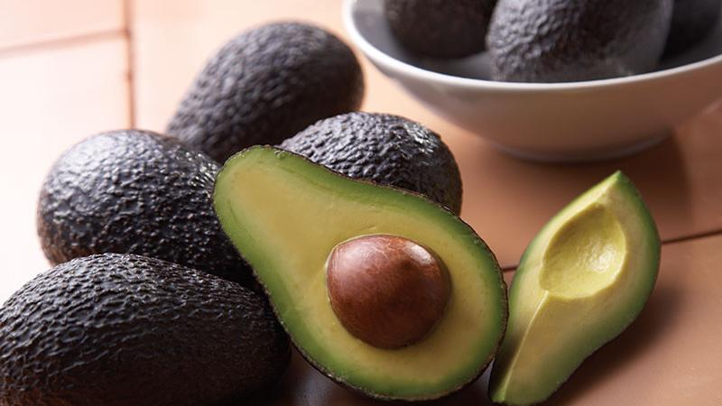
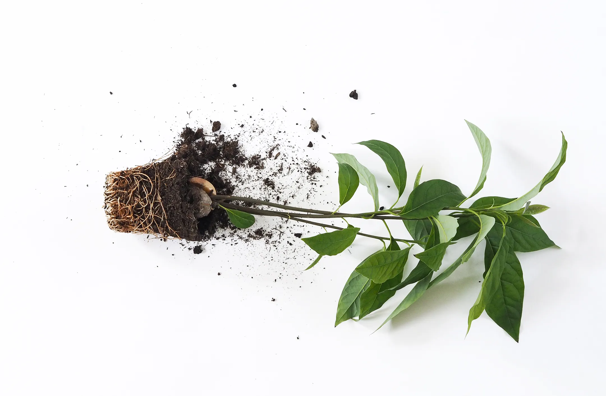

Stages of Growing Avocado

1. Choosing the Right Seed
Select a ripe, healthy avocado. Remove and clean the seed.
2. Sprouting the Seed
Insert toothpicks and suspend in water until roots and sprout appear.

3. Planting in Soil
Transfer to a pot once stem grows 15 cm. Plant with half the seed above soil.